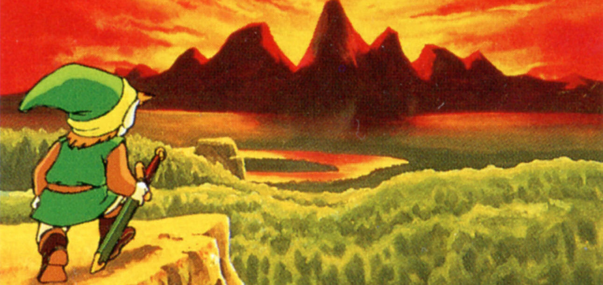

The Legend of Zelda (1986)
1986

El inicio de la saga con la mágica aventura de Link para rescatar a la princesa Zelda y derrotar a Ganon en el reino de Hyrule.
Zelda II: The Adventure of Link (1987)
1987
.webp)
Segunda entrega con un enfoque más orientado a RPG y acción lateral, explorando la secuela directa al primer juego.
A Link to the Past (1991)
1991
.jpeg)
Expande la historia con viajes entre mundos paralelos, estableciendo la cronología clásica y muchos elementos emblemáticos.
Ocarina of Time (1998)
1998
.webp)
Innovador juego 3D que define la saga para muchos fans; presenta viajes en el tiempo y el desarrollo de Link en niño y adulto.
Majora's Mask (2000)
2000
.jpg)
Una aventura oscura y atmosférica que utiliza un ciclo de tiempo de tres días, en la cual Link debe detener la caída de la luna.
The Wind Waker (2002)
2002
.jpg)
Estilo gráfico cel-shading vibrante; Link navega océanos en un mundo muy expandido y enfrenta nuevas amenazas.
Twilight Princess (2006)
2006
.jpg)
Un tono más oscuro y realista con la transformación de Link en lobo, enfrentando la amenaza del reino crepuscular.
Skyward Sword (2011)
2011
.webp)
Origen de la saga, donde se explica la relación entre Link, Zelda y el poder de la espada maestra.
Breath of the Wild (2017)
2017
.avif)
Redefinición de la saga con un mundo abierto enorme, física avanzada y libertad total para explorar Hyrule.
Tears of the Kingdom (2023)
2023
.jpg)
Secuela directa de Breath of the Wild que expande el mundo con nuevas mecánicas, historia y exploración aérea.